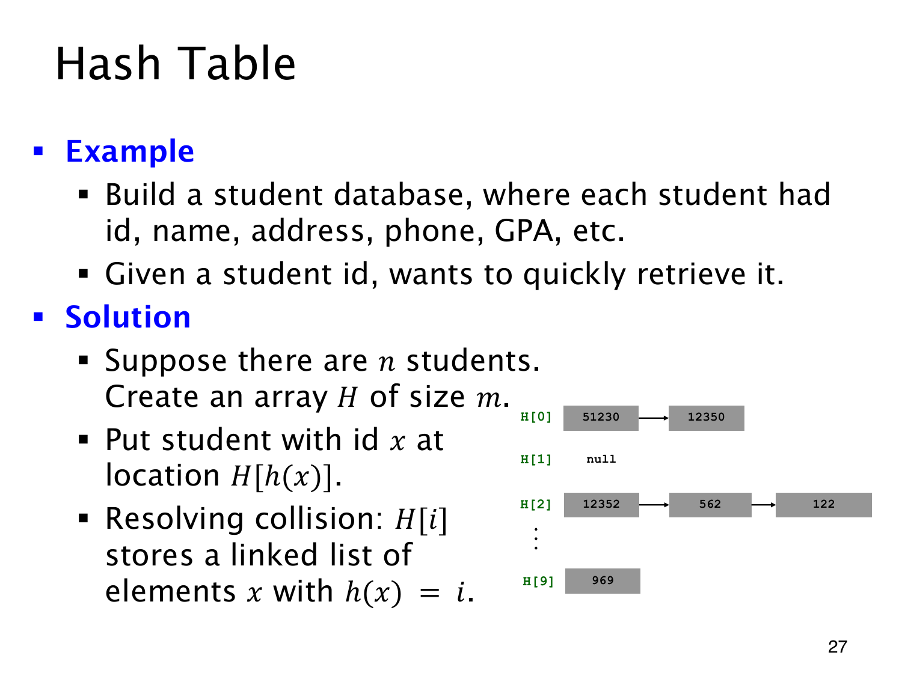

L1.12 · 第 27 页讲解原文
查看这一页课件

一个桶里可以放多条记录
查学号 562 时，图中的方法是先算哈希值 2，到 H[2]，再沿链表比较完整学号：12352、562、122。一次数组访问只把查找带到对应的桶，桶内仍要继续找。
学生数据库的整条记录还包含姓名、地址、电话和 GPA，学号作为 key。建立长度为 m 的数组 H，让哈希函数输出 0 到 m−1，学号为 x 的记录便放在 H[h(x)]。
不同键落到同一位置叫 collision（碰撞）。这里用 linked list（链表）处理，每个桶保存所有映射到此的记录，新记录不会覆盖旧记录。图中 H[0] 链接 51230,12350，H[1] 为空，H[9] 存放 969。
这便构成 hash table（哈希表）。若记录分布均匀，各桶链表通常较短；许多键碰撞到同一桶时，链表仍可能很长，所以选择哈希函数时要尽量分散记录。